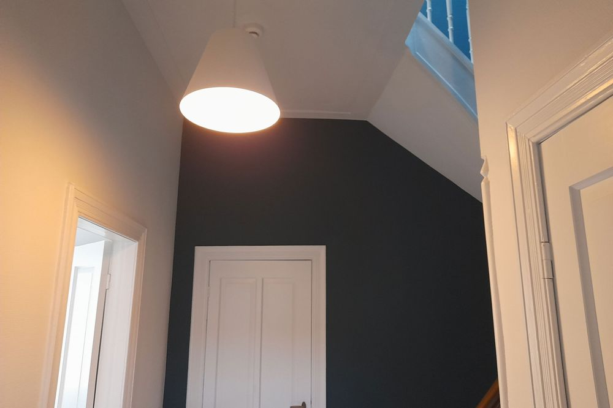
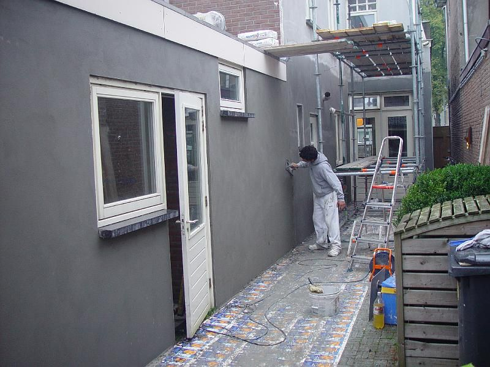
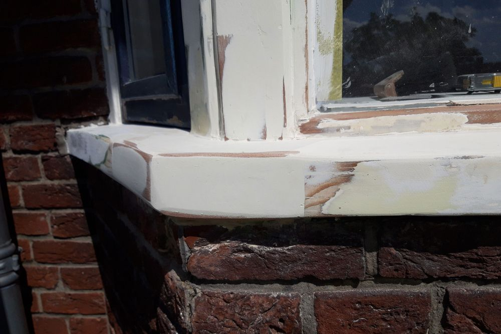

Schilderwerk
Uw woning verfraaien doen we graag, of het nu nieuwbouw is of een pand uit 1850. Rob komt langs om een realistisch advies te geven. Bij klassiekere panden bepaalt u in overleg met ons wat erop gaat.
Schildersbedrijf in Breda, sinds 2010
We kennen de slogan allemaal. Rob Vlemmix Schilders staat niet alleen bekend om het schilderwerk, maar juist om het eerlijk adviseren in uw situatie, de staat van uw woning en de staat van uw portemonnee.
Rob komt gratis langs voor een vrijblijvende offerte. Dat duurt bij hem zelden tien minuten.

Uw interieurschilderwerk aan een update toe? Reserveer nu binnenwerk: stucen, latexen, lakken. Bel uw Winterschilder Rob Vlemmix Schilders.
Bel nu
Uw woning verfraaien doen we graag, of het nu nieuwbouw is of een pand uit 1850. Rob komt langs om een realistisch advies te geven. Bij klassiekere panden bepaalt u in overleg met ons wat erop gaat.

Als perfecte ondergrond. We plakken af, beschermen de vloer met stucloper, kitten de naden en leveren de muur gelatexed op. Ook voor glas vervangen kunt u bij ons terecht.

Houtrot? Ben er op tijd bij. Het eerste bezoek is gratis en alle medewerkers hebben een Houtrotsanerings-certificaat. Hersteld werk wordt meteen geschilderd.
Ook dakkapellen: Vlemmix doet vanuit de hoogte. Laat een inspectie doen voordat het erger wordt. Nieuw: zandstralen en spuiten van hekwerk.